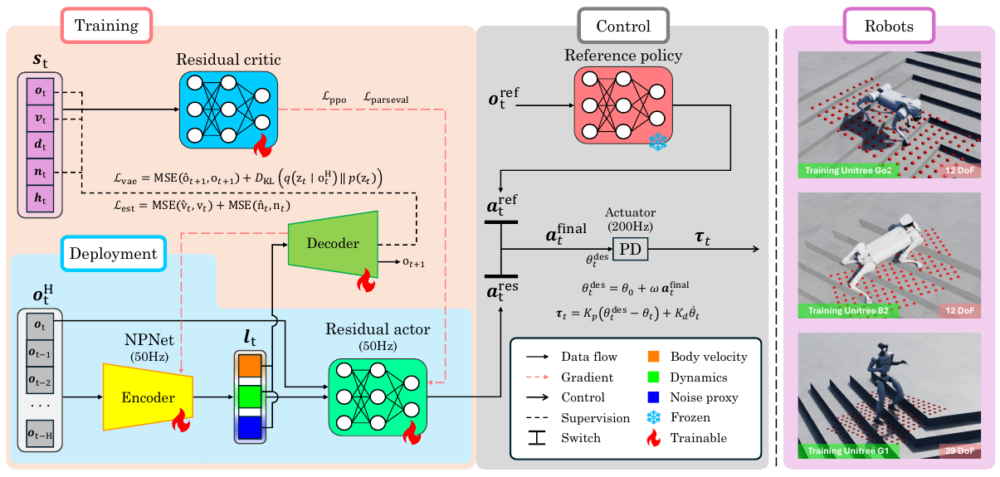
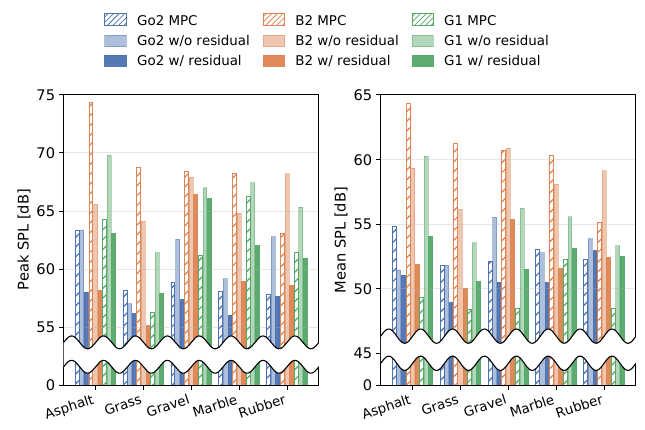
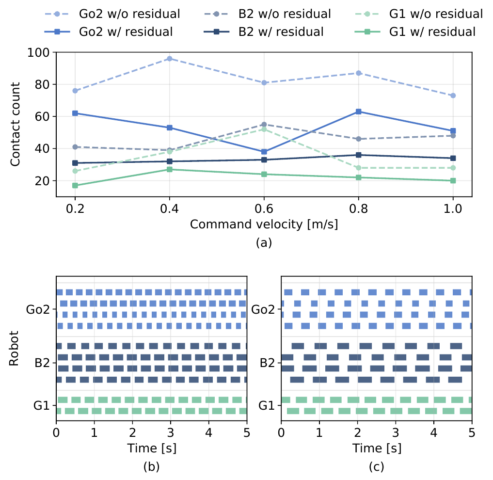
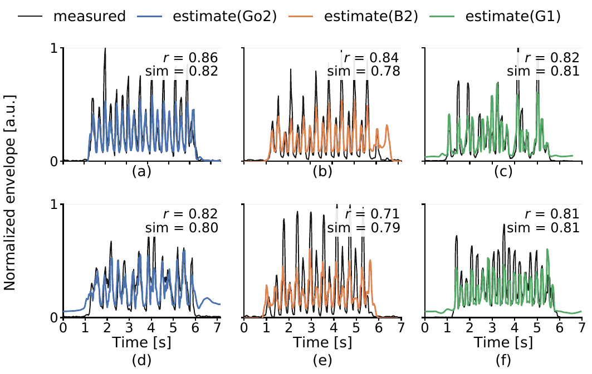
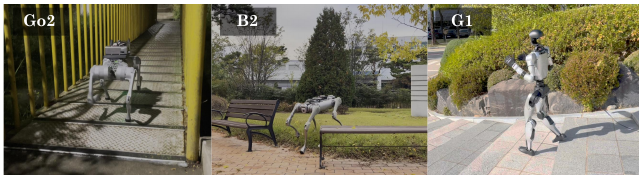

Real-world comparison of the reference and residual-enabled policies at 0.5 m/s, followed by terrain demonstrations. Sound is included for the acoustic comparison.
relative to the reference policy
quadrupedal and humanoid robots
marble and rubber
Research summary
Abstract
Legged robots that operate in human-centric indoor environments must not only track velocity commands robustly, but also minimize the acoustic disturbance caused by their repetitive foot–ground impacts. Standard locomotion reinforcement learning prioritizes tracking and stability, while relatively little attention has been given to the acoustic consequences of foot–ground interactions.
We propose NALOCO, a noise-attenuating residual adaptation framework that uses proprioceptive observation history to infer a mechanically motivated noise proxy, reducing impact-induced acoustic noise without retraining the nominal locomotion controller. NALOCO consists of a residual policy-based controller, a five-term noise proxy function defined in simulation, and a noise proxy estimator network (NPNet). The residual policy uses the NPNet latent to produce bounded action corrections, with Parseval regularization to moderate sensitivity to input variations and a velocity-adaptive quiet-walking reward.
Validation on Unitree Go2, B2 and G1 in simulation and on five real-world terrains shows peak SPL reductions of up to 9.6 dB relative to the reference policy and 16.2 dB relative to the built-in MPC, while preserving velocity-tracking performance.
Noise-proxy-informed residual adaptation
A frozen reference policy supplies nominal joint actions. NALOCO learns a separate correction conditioned on proprioception and an estimated noise proxy, decoupling noise attenuation from nominal locomotion.

Residual control
The residual actor receives the current observation and NPNet latent. Its output is bounded by a scaled tanh function and added to the reference action through a binary switch.
Here, α is the residual scale, fθ is the residual actor, ot is the current observation, and ℓt is the NPNet latent. Setting Ires to zero recovers the reference action exactly.
Only the residual policy is optimized for noise attenuation; the reference policy remains frozen.
Proprioceptive noise estimation
Acoustic measurements are unavailable in conventional locomotion simulators. A five-term mechanical proxy therefore provides simulation-side supervision: touchdown force, contact impulse, joint acceleration, planar foot velocity at contact, and downward foot velocity before contact.
NPNet estimates this proxy from observation history. Its 40-dimensional latent contains estimated body velocity (3), dynamics context (32), and noise proxy (5). Deployment uses proprioceptive observations without privileged contact measurements.
Training the correction
Velocity-adaptive reward. Quiet-touchdown pressure is stronger at low commanded speeds and relaxed at higher speeds.
Controlled adaptation. Near-zero output initialization, bounded actions, Parseval regularization, and detachment of the latent from the policy gradient limit the residual’s influence.
Real-world acoustic attenuation
Enabling the residual reduces peak and mean SPL relative to the reference policy across all three robots and five evaluated surfaces.

Peak SPL reduction
Largest reported reduction against the reference policy for each robot.
- Go2 Asphalt
- 5.3 dB
- B2 Rubber
- 9.6 dB
- G1 Asphalt
- 6.8 dB
B2 also achieves the largest peak reduction against MPC: 16.2 dB on asphalt.
Evaluation conditions. Commanded forward speed is 1.0 m/s, except G1 MPC at its maximum speed of approximately 0.33 m/s. Microphone placement and recording settings are held fixed for relative comparison. Values are SPL in dB. Reported reductions are condition-specific maxima.
Gait contact patterns
With the residual enabled, ground-contact counts generally decrease and contact durations increase. The mean contact duration changes from 151 to 191 ms on Go2, 238 to 338 ms on B2, and 238 to 294 ms on G1. These contact-pattern changes accompany the measured acoustic attenuation.

Touchdown impact and velocity tracking
Across all 15 robot–speed conditions in MuJoCo, the residual reduces mean touchdown impact while matching or improving the reference policy’s mean velocity-tracking error. The largest impact reduction is 65.68% on B2 at 0.2 m/s.
| Robot | Speed (m/s) | Impact force (N) ↓ | Tracking MAE (m/s) ↓ | Impact reduction | ||
|---|---|---|---|---|---|---|
| Reference | NALOCO | Reference | NALOCO | |||
| Go2 | 0.2 | 34.2 | 26.1 | 0.04 | 0.03 | 23.68% |
| Go2 | 0.4 | 53.0 | 41.2 | 0.03 | 0.03 | 22.26% |
| Go2 | 0.6 | 87.1 | 67.9 | 0.03 | 0.03 | 22.04% |
| Go2 | 0.8 | 96.3 | 75.2 | 0.03 | 0.02 | 21.91% |
| Go2 | 1.0 | 108.6 | 93.2 | 0.04 | 0.03 | 14.18% |
| B2 | 0.2 | 367.1 | 126.0 | 0.08 | 0.03 | 65.68% |
| B2 | 0.4 | 547.9 | 197.6 | 0.07 | 0.03 | 63.94% |
| B2 | 0.6 | 457.4 | 288.4 | 0.06 | 0.04 | 36.95% |
| B2 | 0.8 | 572.0 | 404.7 | 0.07 | 0.04 | 29.25% |
| B2 | 1.0 | 598.8 | 541.0 | 0.06 | 0.04 | 9.65% |
| G1 | 0.2 | 143.9 | 113.1 | 0.10 | 0.08 | 21.40% |
| G1 | 0.4 | 138.2 | 119.9 | 0.08 | 0.08 | 13.24% |
| G1 | 0.6 | 165.7 | 136.8 | 0.06 | 0.05 | 17.44% |
| G1 | 0.8 | 186.1 | 118.5 | 0.11 | 0.08 | 36.32% |
| G1 | 1.0 | 182.0 | 140.3 | 0.16 | 0.12 | 22.91% |
Reference: residual disabled. NALOCO: residual enabled with the full five-term noise proxy. All command speeds and all three platforms from Table II are included.
Real-world velocity tracking
The acoustic reductions are accompanied by preserved tracking on hardware. Mean tracking error is lower or equal with the residual enabled at every evaluated speed for all three robots.
| Robot | Method | 0.2 m/s | 0.4 m/s | 0.6 m/s | 0.8 m/s | 1.0 m/s |
|---|---|---|---|---|---|---|
| Go2 | Reference | 0.09 ± 0.02 | 0.04 ± 0.03 | 0.06 ± 0.05 | 0.04 ± 0.02 | 0.09 ± 0.06 |
| Go2 | NALOCO | 0.06 ± 0.02 | 0.04 ± 0.02 | 0.03 ± 0.02 | 0.03 ± 0.03 | 0.06 ± 0.05 |
| B2 | Reference | 0.06 ± 0.04 | 0.04 ± 0.02 | 0.05 ± 0.02 | 0.05 ± 0.03 | 0.11 ± 0.01 |
| B2 | NALOCO | 0.04 ± 0.03 | 0.01 ± 0.02 | 0.04 ± 0.02 | 0.01 ± 0.02 | 0.08 ± 0.01 |
| G1 | Reference | 0.09 ± 0.04 | 0.07 ± 0.04 | 0.04 ± 0.04 | 0.07 ± 0.04 | 0.12 ± 0.07 |
| G1 | NALOCO | 0.07 ± 0.03 | 0.03 ± 0.03 | 0.04 ± 0.04 | 0.06 ± 0.03 | 0.06 ± 0.04 |
Agreement between estimated proxy and measured sound
During forward and backward walking on all three robots, NPNet’s estimated proxy follows the measured microphone envelope with Pearson correlation 0.71–0.86 and DTW similarity 0.78–0.82. Each recording is aligned using one fixed time lag, and both signals are normalized before comparison.

Noise-proxy ablation
The full five-term proxy (NP-5) produces the lowest mean touchdown impact in all 15 robot–speed conditions. The tables below include every baseline and all command speeds from the paper, retaining the reported standard deviations.
Reference: frozen nominal locomotion policy. Fine-tuned reference: reference policy fine-tuned with the quiet/noise rewards. Retrained reference: trained from scratch using the same rewards.
NP-0: residual without a noise proxy. NP-3: touchdown force, contact impulse and downward foot velocity. NP-5: all five proxy terms, including joint acceleration and planar foot velocity.
| Robot | Method | 0.2 m/s | 0.4 m/s | 0.6 m/s | 0.8 m/s | 1.0 m/s |
|---|---|---|---|---|---|---|
| Go2 | Reference | 34.2 ± 9 | 53.0 ± 21 | 87.1 ± 38 | 96.3 ± 33 | 108.6 ± 44 |
| Go2 | Fine-tuned reference | 33.0 ± 9 | 51.9 ± 23 | 81.5 ± 38 | 89.0 ± 34 | 108.5 ± 42 |
| Go2 | Retrained reference | 33.4 ± 8 | 50.3 ± 18 | 80.9 ± 26 | 92.3 ± 31 | 106.4 ± 38 |
| Go2 | NP-0 | 32.5 ± 11 | 46.5 ± 23 | 85.3 ± 27 | 90.7 ± 42 | 98.3 ± 58 |
| Go2 | NP-3 | 30.4 ± 9 | 46.2 ± 26 | 75.3 ± 31 | 87.8 ± 40 | 96.1 ± 42 |
| Go2 | NP-5 (NALOCO) | 26.1 ± 8 | 41.2 ± 21 | 67.9 ± 29 | 75.2 ± 30 | 93.2 ± 34 |
| B2 | Reference | 367.1 ± 64 | 547.9 ± 68 | 457.4 ± 97 | 572.0 ± 13 | 598.8 ± 31 |
| B2 | Fine-tuned reference | 333.6 ± 18 | 538.7 ± 47 | 428.5 ± 170 | 538.7 ± 188 | 590.2 ± 252 |
| B2 | Retrained reference | 354.2 ± 33 | 466.7 ± 54 | 427.7 ± 95 | 536.8 ± 130 | 591.0 ± 167 |
| B2 | NP-0 | 217.7 ± 78 | 290.6 ± 35 | 400.7 ± 113 | 531.2 ± 224 | 594.8 ± 231 |
| B2 | NP-3 | 150.2 ± 90 | 224.2 ± 169 | 333.7 ± 149 | 462.2 ± 164 | 577.4 ± 194 |
| B2 | NP-5 (NALOCO) | 126.0 ± 44 | 197.6 ± 189 | 288.4 ± 152 | 404.7 ± 137 | 541.0 ± 155 |
| G1 | Reference | 143.9 ± 24 | 138.2 ± 32 | 165.7 ± 19 | 186.1 ± 42 | 182.0 ± 46 |
| G1 | Fine-tuned reference | 121.2 ± 34 | 129.9 ± 46 | 150.4 ± 51 | 172.4 ± 43 | 172.4 ± 54 |
| G1 | Retrained reference | 118.7 ± 63 | 135.6 ± 66 | 151.6 ± 75 | 176.1 ± 77 | 173.9 ± 83 |
| G1 | NP-0 | 119.7 ± 48 | 133.3 ± 33 | 141.6 ± 11 | 128.7 ± 57 | 160.4 ± 90 |
| G1 | NP-3 | 117.8 ± 34 | 123.8 ± 59 | 143.1 ± 52 | 123.4 ± 47 | 164.7 ± 68 |
| G1 | NP-5 (NALOCO) | 113.1 ± 52 | 119.9 ± 34 | 136.8 ± 62 | 118.5 ± 74 | 140.3 ± 82 |
NP-5 yields the lowest mean impact in every condition. Tracking does not improve monotonically as proxy terms are added; Table V reports that trade-off directly.
Table V · Full tracking-error ablation
| Robot | Method | 0.2 m/s | 0.4 m/s | 0.6 m/s | 0.8 m/s | 1.0 m/s |
|---|---|---|---|---|---|---|
| Go2 | Reference | 0.04 ± 0.02 | 0.03 ± 0.03 | 0.03 ± 0.02 | 0.03 ± 0.03 | 0.04 ± 0.02 |
| Go2 | Fine-tuned reference | 0.05 ± 0.03 | 0.03 ± 0.02 | 0.03 ± 0.02 | 0.02 ± 0.03 | 0.03 ± 0.03 |
| Go2 | Retrained reference | 0.05 ± 0.04 | 0.06 ± 0.02 | 0.13 ± 0.04 | 0.14 ± 0.02 | 0.16 ± 0.04 |
| Go2 | NP-0 | 0.03 ± 0.02 | 0.02 ± 0.01 | 0.02 ± 0.02 | 0.02 ± 0.03 | 0.03 ± 0.02 |
| Go2 | NP-3 | 0.03 ± 0.03 | 0.03 ± 0.02 | 0.03 ± 0.02 | 0.02 ± 0.03 | 0.03 ± 0.02 |
| Go2 | NP-5 (NALOCO) | 0.03 ± 0.03 | 0.03 ± 0.03 | 0.03 ± 0.02 | 0.02 ± 0.03 | 0.03 ± 0.03 |
| B2 | Reference | 0.08 ± 0.06 | 0.07 ± 0.02 | 0.06 ± 0.03 | 0.07 ± 0.04 | 0.06 ± 0.05 |
| B2 | Fine-tuned reference | 0.04 ± 0.02 | 0.07 ± 0.03 | 0.06 ± 0.02 | 0.03 ± 0.01 | 0.05 ± 0.02 |
| B2 | Retrained reference | 0.03 ± 0.01 | 0.04 ± 0.03 | 0.07 ± 0.03 | 0.13 ± 0.03 | 0.18 ± 0.09 |
| B2 | NP-0 | 0.02 ± 0.02 | 0.05 ± 0.02 | 0.05 ± 0.01 | 0.06 ± 0.04 | 0.06 ± 0.04 |
| B2 | NP-3 | 0.02 ± 0.04 | 0.04 ± 0.04 | 0.05 ± 0.02 | 0.04 ± 0.01 | 0.05 ± 0.02 |
| B2 | NP-5 (NALOCO) | 0.03 ± 0.05 | 0.03 ± 0.03 | 0.04 ± 0.01 | 0.04 ± 0.02 | 0.04 ± 0.05 |
| G1 | Reference | 0.10 ± 0.05 | 0.08 ± 0.04 | 0.06 ± 0.03 | 0.11 ± 0.02 | 0.16 ± 0.02 |
| G1 | Fine-tuned reference | 0.09 ± 0.04 | 0.08 ± 0.03 | 0.06 ± 0.02 | 0.08 ± 0.01 | 0.07 ± 0.04 |
| G1 | Retrained reference | 0.10 ± 0.06 | 0.11 ± 0.09 | 0.07 ± 0.03 | 0.13 ± 0.03 | 0.28 ± 0.08 |
| G1 | NP-0 | 0.07 ± 0.02 | 0.07 ± 0.03 | 0.04 ± 0.03 | 0.08 ± 0.02 | 0.07 ± 0.02 |
| G1 | NP-3 | 0.08 ± 0.03 | 0.08 ± 0.02 | 0.04 ± 0.03 | 0.08 ± 0.01 | 0.08 ± 0.02 |
| G1 | NP-5 (NALOCO) | 0.08 ± 0.03 | 0.08 ± 0.03 | 0.05 ± 0.04 | 0.08 ± 0.02 | 0.12 ± 0.02 |
Quadrupedal and humanoid locomotion
The same training pipeline is applied separately to Go2, B2 and the 29-DoF G1. Real-world demonstrations include an iron plate, a grassy slope and staircase descent.

Implementation details
Training
Isaac Lab · 4,096 parallel environments
PPO · 5,000 iterations
Approximately 2.5 hours per robot
Networks
Residual actor/critic: [512, 256, 128]
NPNet encoder: [256, 128]
NPNet decoder: [128, 256]
Control
Intel NUC for policy inference
NPNet and residual policy: 50 Hz
Actuator PD controller: 200 Hz
Citation
@article{anonymous_naloco,
title = {Noise-Attenuated Legged Locomotion via
Noise-Proxy-Informed Residual Actions},
author = {Anonymous Authors},
note = {Manuscript submitted to IEEE Robotics and Automation Letters}
}